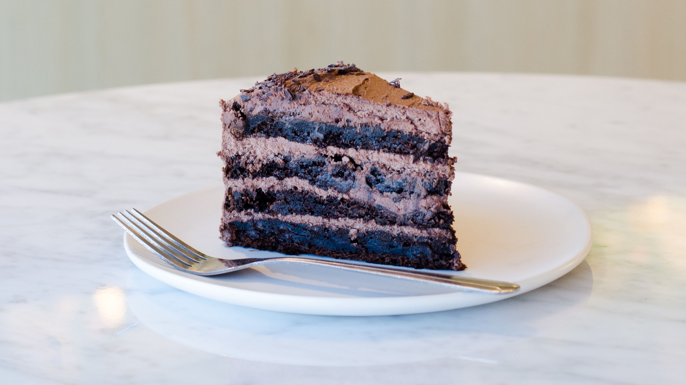
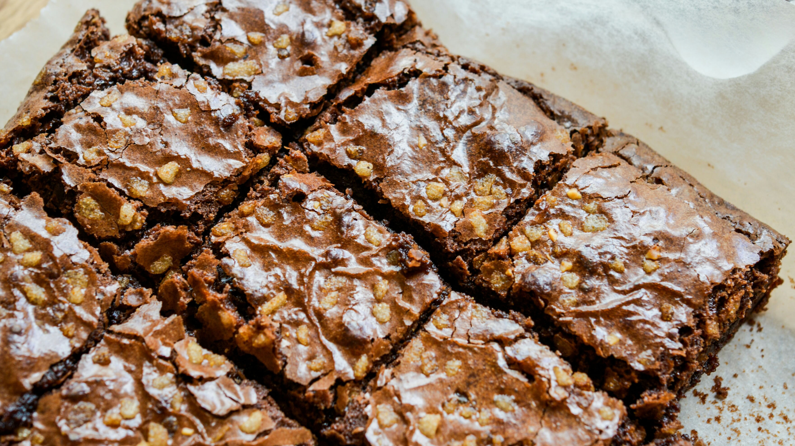
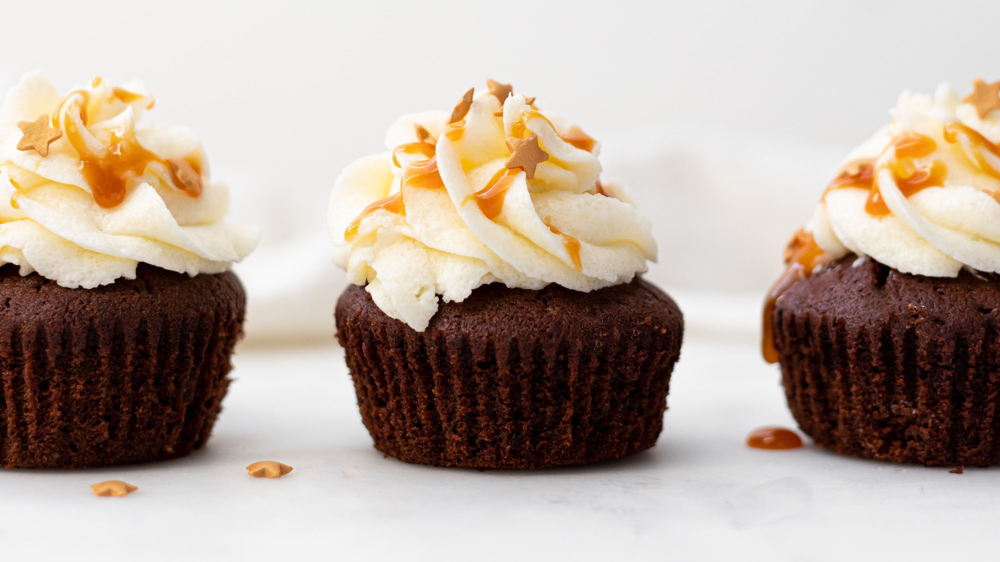
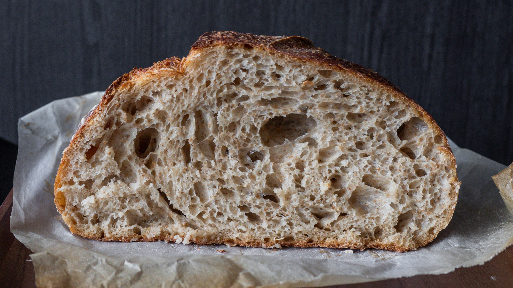
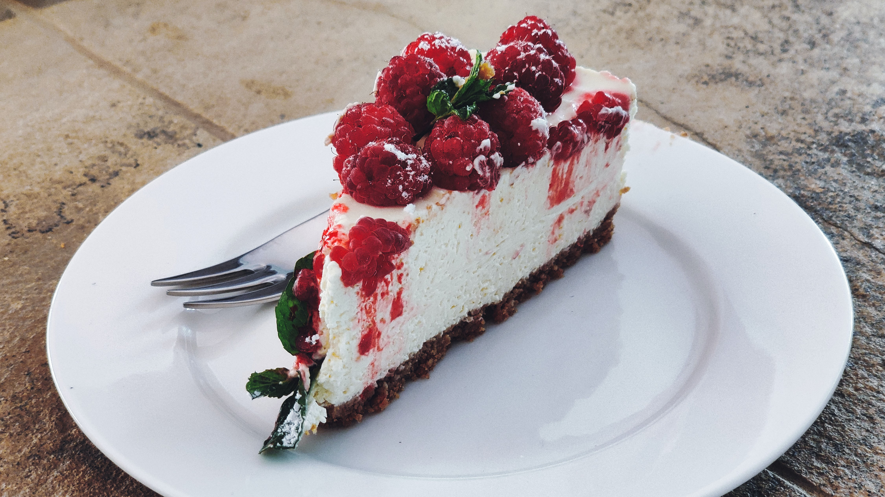
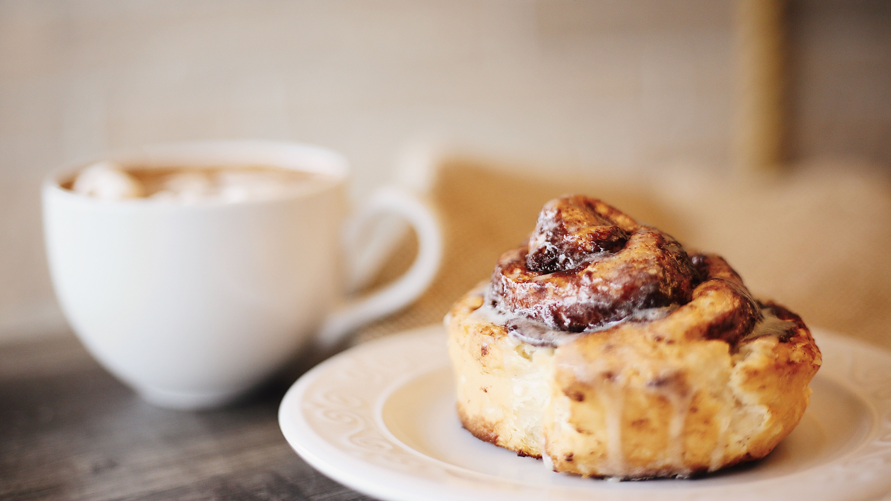
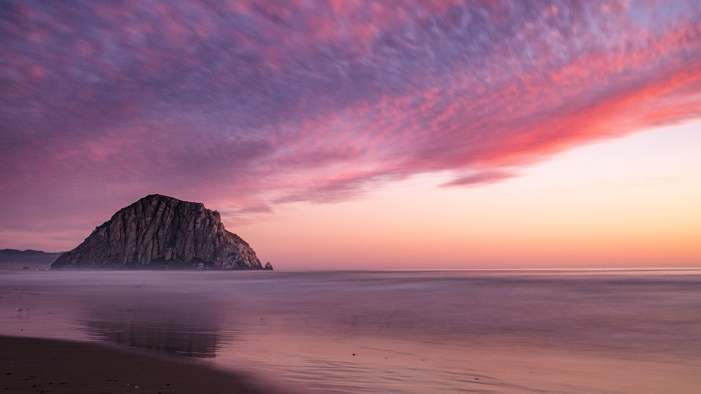

Photo Gallery
Recipes
Blog
Contact Us
Our Top Images for Summer 2021

Chocolate Ganache Cake

Walnut Coffee Brownies

Chocolate Cupcakes with Carmel Drizzle

No-Knead Sourdough Bread

Raspberry Cheesecake
Rugged Coastline

Gooey Cinnamon Rolls

Morro Bay Rock